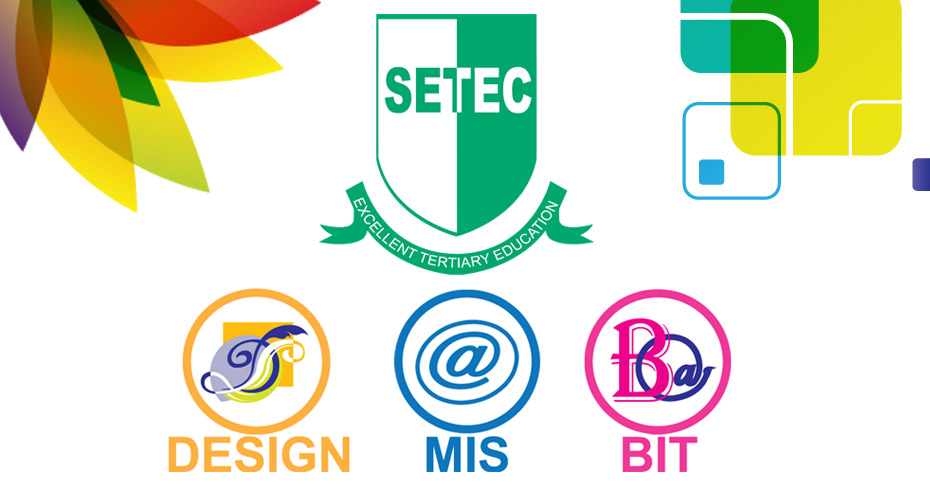

វិទ្យាស្ថានស៊ីតិក |
ទំនាក់ទំនង |
កម្មវិធីសិក្សា |
កម្មសិក្សា |
សម្ភារបរិក្ខា |
អំពីវិទ្យាស្ថាន |
រចនាសម្ព័ន្ធ |
សិស្ស |
មុខវិជ្ចា


អំពីវិទ្យាស្ថាន ស៊ីតិក

១.ចក្ខុវិស័យ
វិទ្យាស្ថានស៊ីតិក ត្រូវបន្តក្លាយខ្លួនទៅជាគ្រឹះស្ថានឧត្តមសិក្សាឯកជនមួយឈានមុខគេលើ ការបណ្តុះបណ្តលផ្នែកបច្ចេកវិទ្យាព័ត៌មានវិទ្យា និង ប្លង់និងរចនា នៅក្នុងព្រះរាជាណាចក្រ កម្ពុជា និងលើកកម្ពស់គុណភាពអប់រំ គ្រប់គ្រង ស្រាវជ្រាវ និងសេវាកម្ម ឱ្យមានកម្រិត អន្តរជាតិ ។
២.បេសកកម្ម
ដើម្បីធានាឲ្យបាននូវលទ្ធផលនៃចក្ខុវិស័យខាងលើ វិទ្យាស្ថានស៊ីតិក ត្រូវបំពេញបេសកកម្ម របស់ខ្លួនដោយបណ្តុះបណ្តាលនិងអប់រំនិស្សិតប្រកបដោយគុណភាព និងក្រមសីលធម៌ ដែល អាចផ្តល់ឱកាសជូននិស្សិតនូវទីផ្សារការងារតាមរយៈការយកចិត្តទុកដាក់លើការអភិវឌ្ឍធន ធានបុគ្គលិកនិងគ្រូបង្រៀន សេវាកម្មសិក្សាល្អពិសេស និងទំនើបកម្មលើកម្មវិធីសិក្សា និង ធនធានសម្ភាររូបវ័ន្ត ។
៣.គោលបំណង
ដើម្បីសម្រេចបេសកកម្ម ស្របតាមចក្ខុវិស័យខាងលើ វិទ្យាស្ថានស៊ីតិក ប្តេជ្ញាសម្រេចឱ្យ បាននូវគោលបំណងសំខាន់ ៗ ចំនួនប្រាំគឺ៖
- លើកកម្ពស់ការអភិវឌ្ឍកម្មវិធីសិក្សា ឱ្យមានគុណភាពដើម្បីឆ្លើយតបទៅនឹង គោលនយោបាយអប់រំកម្ពុជា និងទីផ្សារការងារថ្នាក់ជាតិនិងអន្តរជាតិ
- បន្តលើកកម្ពស់គុណភាពអប់រំឧត្តមសិក្សាដល់សិស្ស និស្សិត និងគ្រប់ភាគីពាក់ព័ន្ធ
- លើកកម្ពស់ហេដ្ឋារចនាសម្ព័ន្ធ ដើម្បីគាំទ្រលើដំណើរការរបស់វិទ្យាស្ថាន ឱ្យមានប្រសិទ្ធភាព
- លើកកម្ពស់ការអភិវឌ្ឍន៍ធនធាន បុគ្គលិក និងគ្រូបង្រៀន ឱ្យកាន់តែមានប្រសិទ្ធភាព
- ពង្រឹងសេវាកម្មគាំទ្រការសិក្សាដើម្បីធានាថានិស្សិតទទួលបាននូវជោគជ័យក្នុងការសិក្សា ប្រកបដោយគុណភាព គុណធម៌ និងច្នៃប្រឌិតខ្ពស់